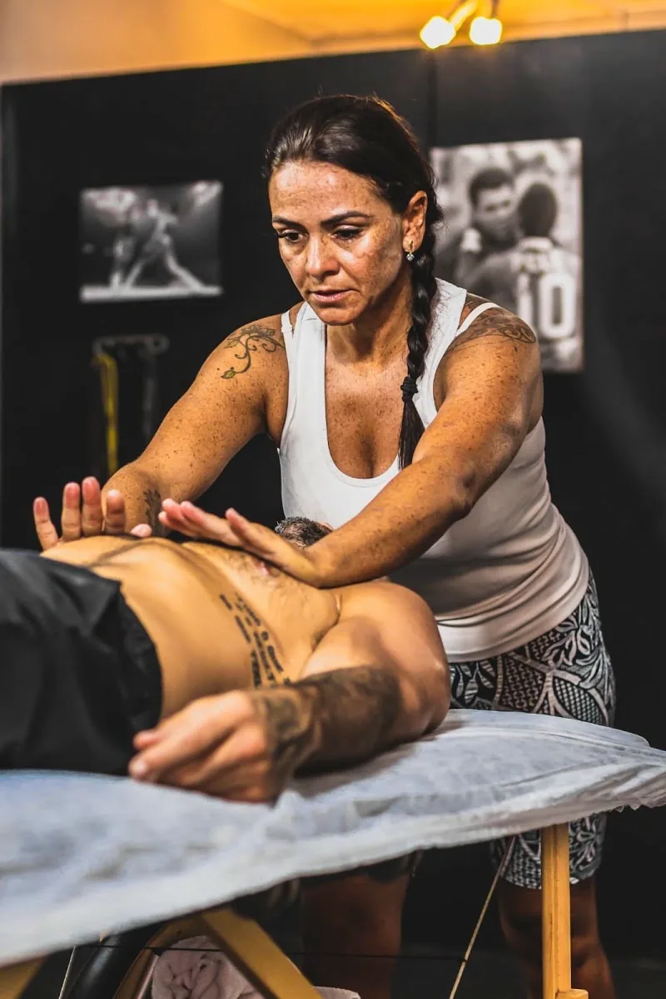
Fisioterapia
Avaliação e tratamento para dores, lesões e limitações de movimento, com condutas escolhidas para o seu caso.
Agendar fisioterapiaAtendimento com horário marcado, de segunda a sexta, das 8h às 20h. Fisioterapia, pilates, massoterapia e terapias integrativas com a Dra. Fernanda Costa. Escolha o seu horário pelo WhatsApp.
Nota 5,0 no Google, com 75 avaliações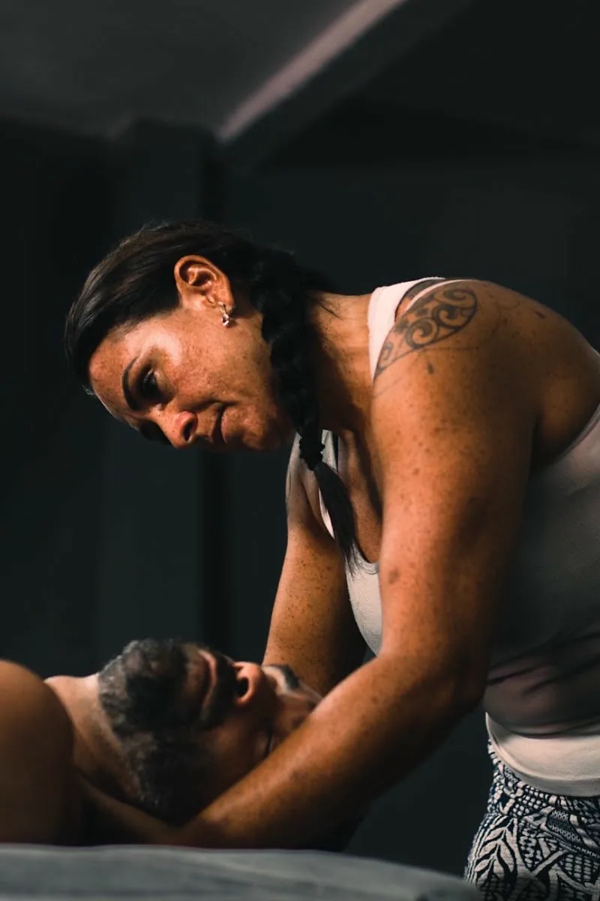
Escolha por onde começar. Em qualquer uma das frentes, o atendimento é com horário marcado.

Avaliação e tratamento para dores, lesões e limitações de movimento, com condutas escolhidas para o seu caso.
Agendar fisioterapiaCuidado com a comunicação: voz, fala, linguagem e deglutição.
Agendar fonoaudiologia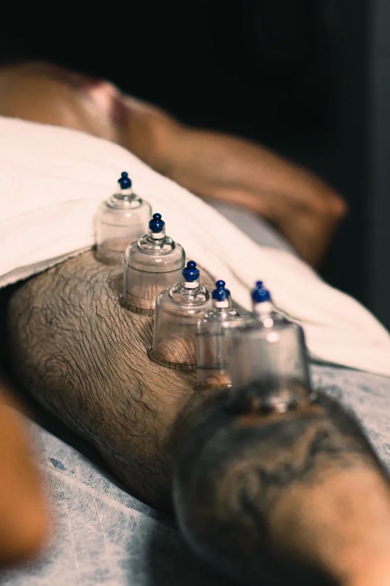
Ventosaterapia, moxabustão e outras práticas que complementam o tratamento.
Agendar terapias integrativas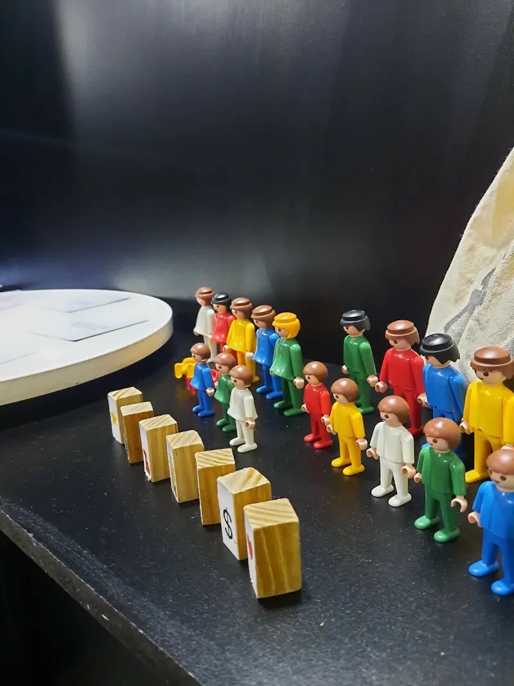
Método que ajuda a olhar para as relações e a história da família, usando bonecos e outros recursos para representar as pessoas e perceber o que pesa em cada vínculo.
Saber mais sobre constelação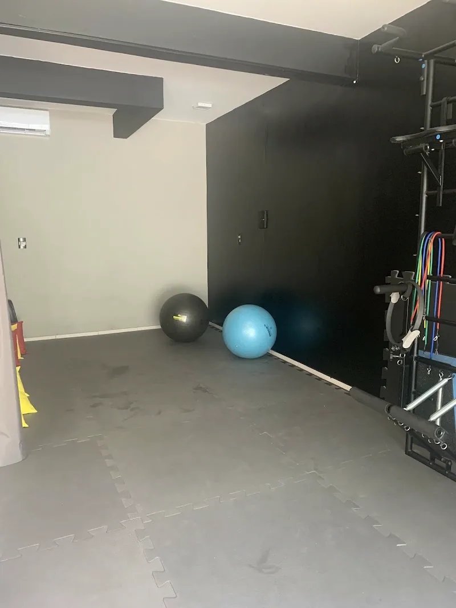
Aulas com acompanhamento, em sala equipada, para fortalecer, alongar e cuidar da postura.
Agendar pilates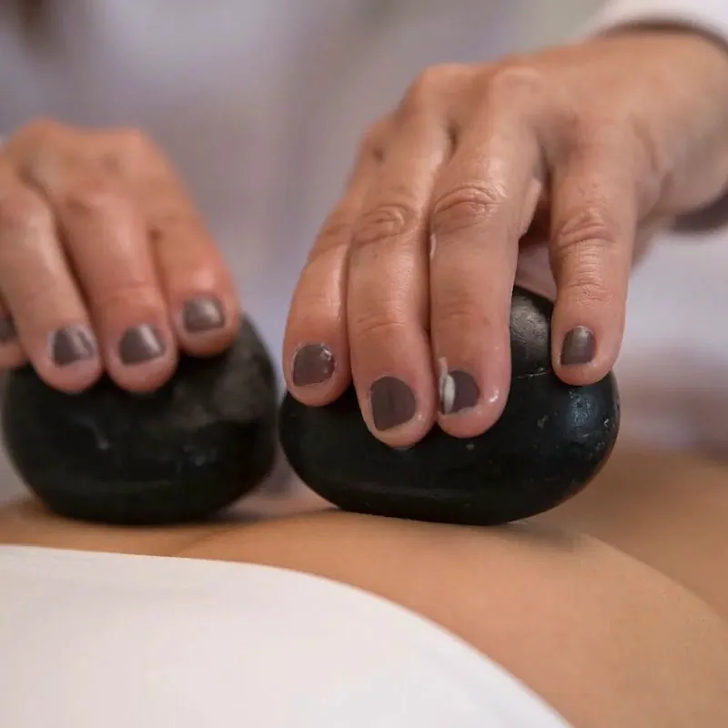
Massagens para aliviar tensões e relaxar, incluindo a massagem com pedras quentes.
Agendar massoterapiaMassoterapia, ventosaterapia, moxabustão e agulhamento fazem parte do dia a dia da clínica. Estas imagens mostram um pouco do atendimento.
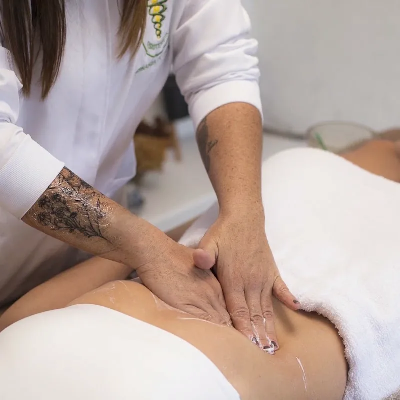
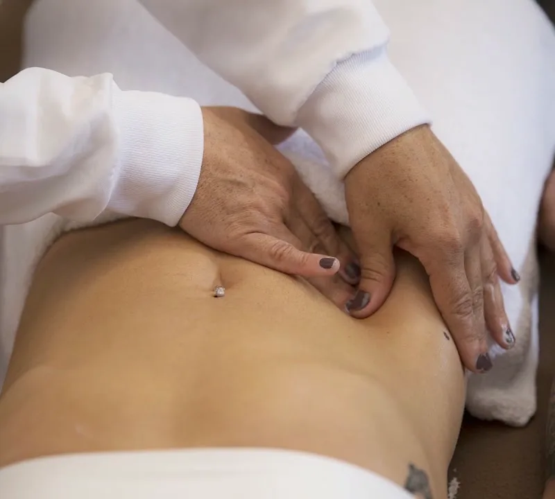
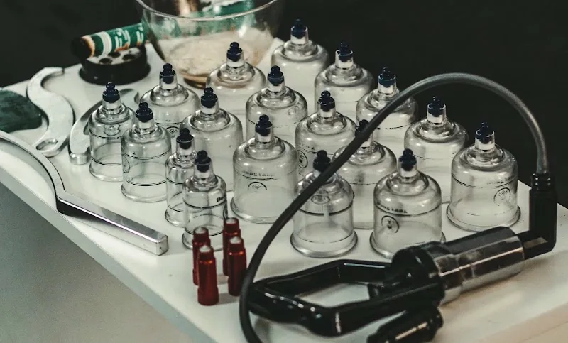
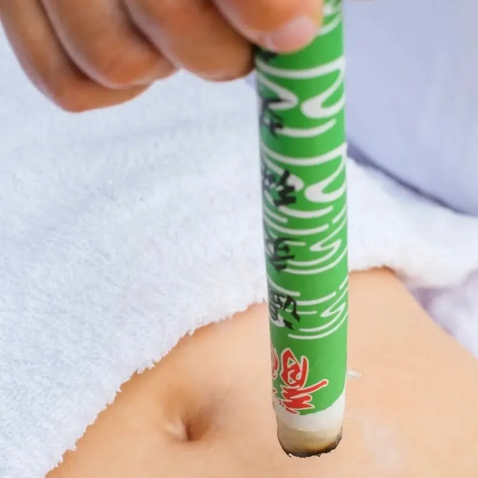
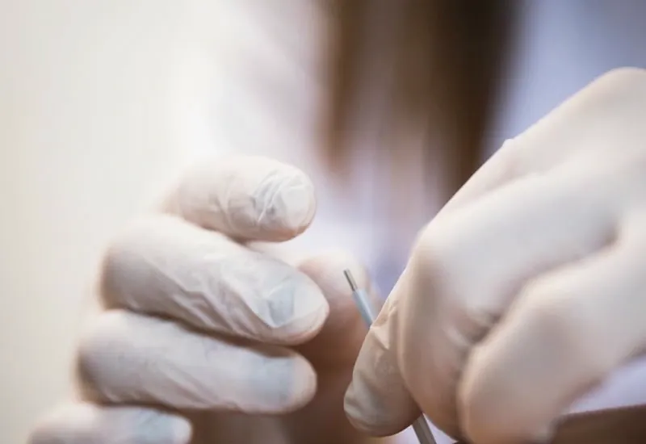
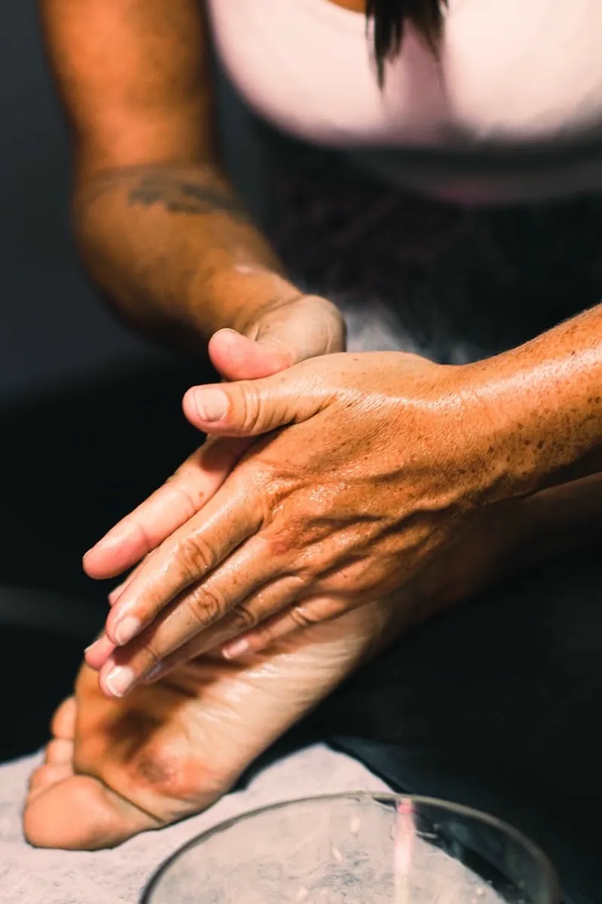
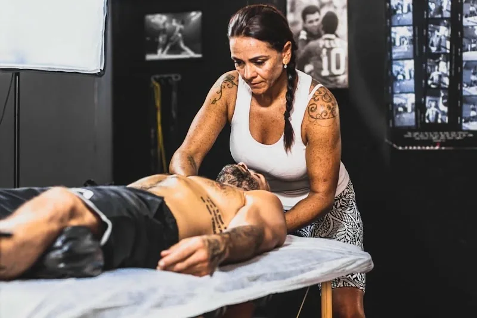
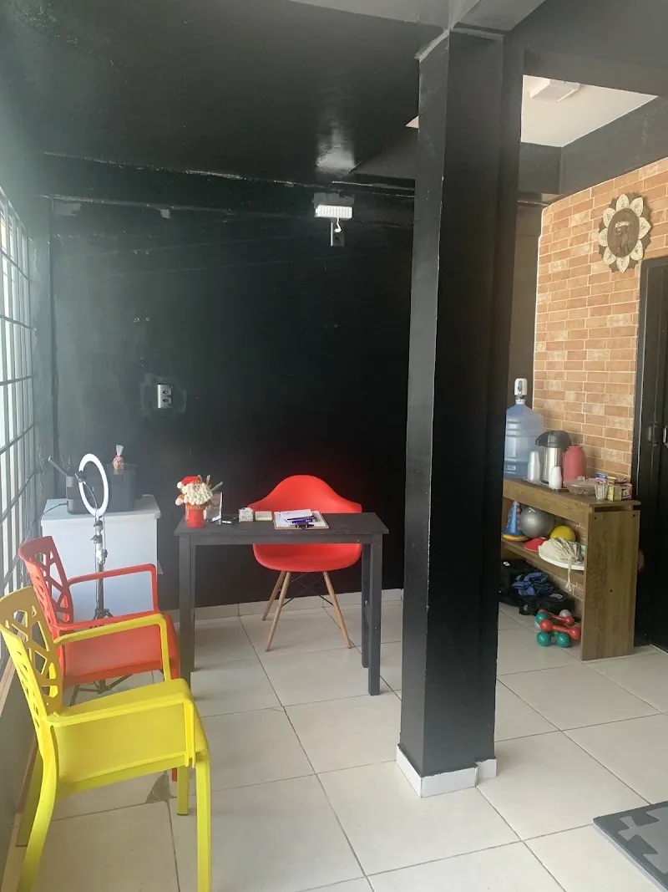
A Éfis Terapias é o espaço da fisioterapeuta Dra. Fernanda Costa, na Lagoa da Conceição, em Florianópolis. Fisioterapia, pilates, massoterapia e terapias integrativas se encontram no mesmo lugar.
Nas avaliações dos pacientes, o que mais aparece é a atenção, o acolhimento e o ambiente aconchegante.
5,0
“O trabalho da Fernanda é realmente diferenciado.”
Conhecer o trabalho da Dra. Fernanda Costa foi uma experiência transformadora. Minha busca por autoconhecimento me conectou com ela e aprendo demais com seu conhecimento. Super indico pra quem está com a mente aberta e pronta para evoluir nessa vida.
Excellent physio in Floripa! Highly Reccommended. 5 stars ☆☆☆☆☆
Fernanda helped a lot with getting rid of scar tissue from my injured shoulder.
We did a detailed pre assessment and then she worked on the injury with manual technique.
She has lots of knowledge, has a great energy and did a great job.
James
Já fui atendida várias vezes pela Fernanda. Ela é ótima profissional! A massagem dela é maravilhosa, assim como as manobras e as técnicas que ela utiliza com a ventosaterapia! Super recomendo para aliviar as dores e tensões do dia a dia!
Surpreendente!
Logo após anamnese, o uso da ferramenta adequada, conforme conhecimentos da Fernanda, foi um alento para as dores na coluna. Trata-se de uma profissional dedicada, respeitosa, estudiosa, supera as espectativas. Sigo com o tratamento e há uma ótima transformação em minha vida.
Muito obrigada Fernanda.
A Éfis Terapias fica na Lagoa da Conceição, em Florianópolis, e atende quem procura fisioterapeuta, pilates, massoterapia ou terapias integrativas na região, na Ilha e em toda a Grande Florianópolis.
Horário de atendimento: segunda a sexta, das 8h às 20h.
Procure a fachada lilás com a flor de lótus. O atendimento é com horário marcado: combine o seu pelo WhatsApp ou por telefone, no (48) 99194-8152.
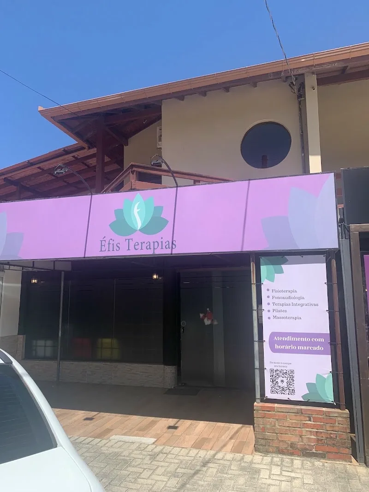
O atendimento é com horário marcado. Conte o que você sente e escolha um horário pelo WhatsApp.